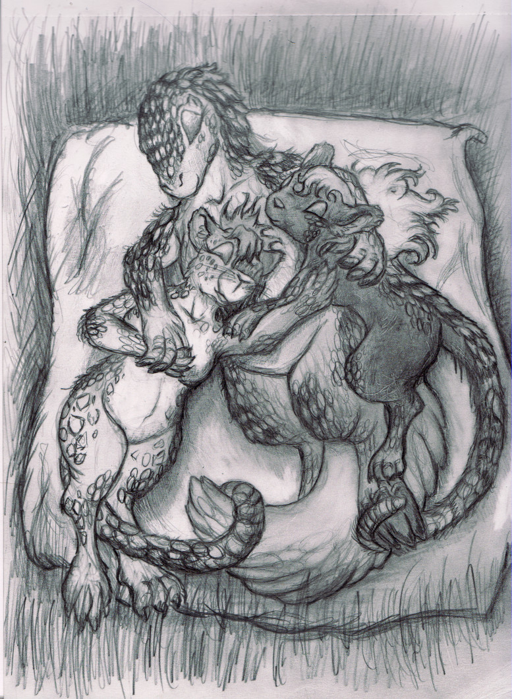

Hey there. I'm CrazedCollie, or you may have seen the nick 'FoxOfWar' somewhere around the internets.
I do the art thing and some have even claimed I am decent at it, so I figured I would finally get off my rear
and actually create a webpage for this stuff.
For the vast majority of my art 'career' (if you can call it that), I have been a traditional artist
- that is, I draw with pencil, then color with a combination of color pencils and markers if I can be bothered to.
Within these pages you can find examples of my work that are suitable for viewing at work, which is admittedly smaller percentage of them than I would like to admit. You can also find the information for commissioning me for art, should that sort of thing be within your purview. And finally you can find links to my more proper online galleries, as this site only has a fraction of what I have ever drawn, compared to my DeviantArt account being old enough to drive.